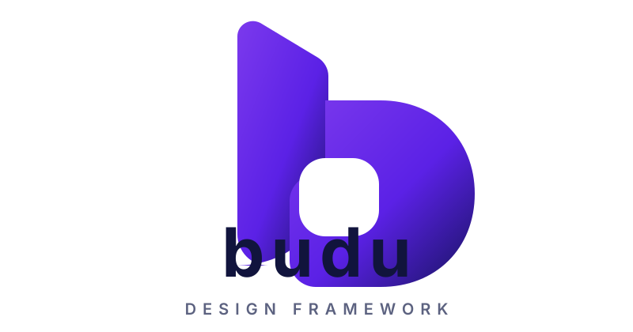

The official budu brand assets: the logo lockup, the abstract icon, color tokens, and usage guidelines.
All assets live in budu-brand-assets/ and are also mirrored in this documentation site.
Use the full lockup for websites, documentation, presentations, and marketing. It combines the abstract icon, the "budu" wordmark, and the "DESIGN FRAMEWORK" tagline.

budu-logo.svg · budu-logo-primary.png (white) · budu-logo-primary-transparent.png · budu-logo-primary-dark.png
The abstract "b" icon works alone for favicons, app icons, package avatars, GitHub avatars, and compact navigation. It's available as SVG and PNG from 16px to 512px.
These tokens map to the framework's theme: --budu-primary: #7c3aed,
--budu-secondary: #5b21e6, --budu-dark: #17135f, and the grays are derived from
#11143d/#5c6280.

budu-banner.png (1600×400) · budu-og-image.png (1200×630, used for Open Graph / social previews)
Inter, ui-sans-serif, system-ui, -apple-system, BlinkMacSystemFont, "Segoe UI", sans-serif (which budu
uses by default).| File | Description |
|---|---|
budu-logo.svg / budu-logo-primary*.png |
Logo lockup (vector / white / transparent / dark) |
budu-icon.svg / budu-icon*.png |
Icon-only mark (SVG + 16–512px PNG, dark & transparent variants) |
budu-banner.png |
1600×400 brand banner |
budu-og-image.png |
1200×630 Open Graph / social preview |